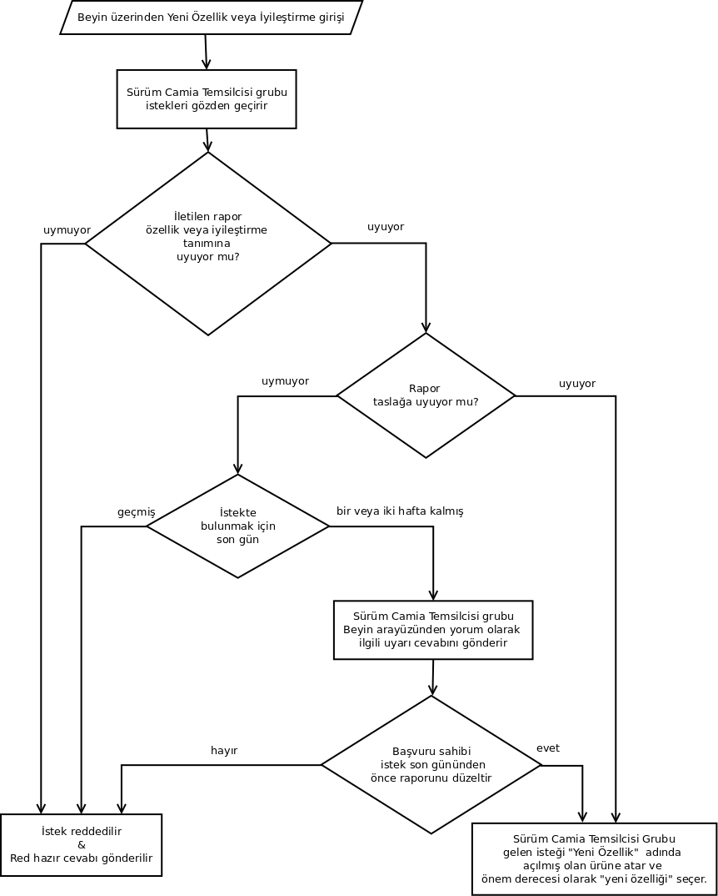
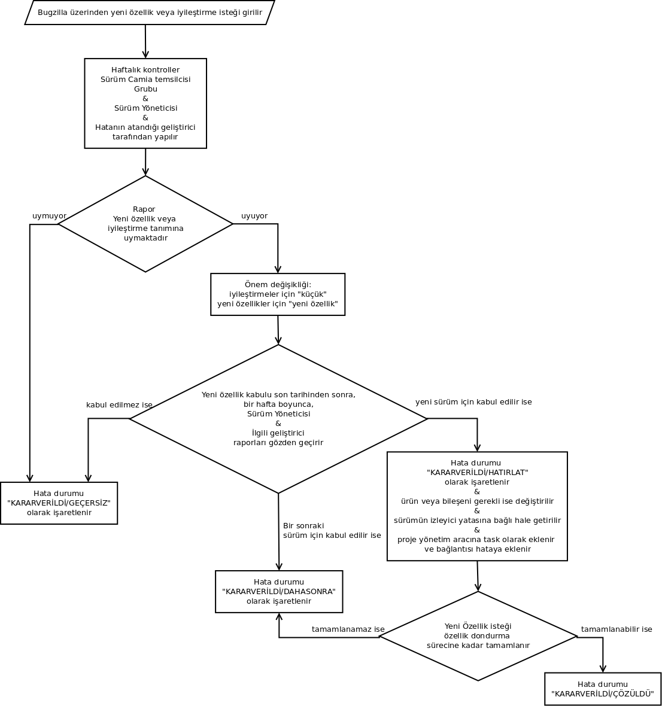

Contents
İyileştirme var olan bir özelliğin daha etkili ve iyi bir şekilde kullanılabilmesi, çalışabilmesi için önerilen yöntem olarak tanımlanabilir.
Özellik geliştirilmekte olan Padus sürümü için elle tutulur bir değişiklik veya geliştirme olarak tanımlanabilir.
Düzgün bir şekilde geliştirilmediğinde ve eksiklikleri bulunduğunda sürümü öteleyebilecek kadar önemli olmalıdır.
Sürüm notlarına konulabilecek kadar önemli bir özellik olmalıdır.
Yapılacak olan değişikliği veya iyileştirmeyi yararlı bulacak bir kullanıcı topluluğu olmalıdır.
Yapılacak olan değişiklik veya geliştirme bir zorunluluk getirmemelidir. Yapılacak olan değişiklik bir konfigurasyon dosyasını etkilemekte ve son kullanıcıyı güncellemelerden sonra sistemi düzeltmek için müdahale etmeye zorlamamalıdır.
Yeni özellik istekleri yeni paket istekleri ile karıştırılmamalıdır.
Bir paketin güncellenme isteği yeni bir özellik isteği değildir.
Bunun iki yöntemi bulunmaktadır:
bugs.pardus.org.tr üyeliğiniz bulunmalıdır.
bugs.pardus.org.tr ana sayfasından "Yeni bir Hata Raporla" butonuna basınız.
Yeni bir özellik eklenmesini istediğiniz uygulamayı seçiniz.
Karşınıza bir raporlama arayüzü çıkacaktır.
Özet bölümü Yeni Özellik X şeklinde bir başlık içermelidir. (X istemiş olduğunuz yeni özellik olacaktır.)
- Ayrıntılar bölümünde aşağıda bulunan soruları başlıklar halinde cevaplandırmanız gerekmektedir?
- Özet: Düşündüğünüz yeni özelliği kısaca açıklayınız.
- Tanım: Düşündüğünüz yeni özelliğin ne anlama geldiğini, ayrıntılarını bu bölümde anlatmalısınız.
- Pardus'a Katkısı: Bu yeni özellik tamamlandığında Pardus'a nasıl bir katkısı olacak.
Önem bölümünde "Yeni Özellik: Yeni bir özellik isteği" seçilmelidir.
http://www.ozgurlukicin.com/yenifikir/ adresinden yeni özellik isteğinde bulunabilirsiniz.
Bu yöntem ile yeni özellik girebilmeniz için Özgürlük İçin'de üyeliğiniz bulunması gerekmektedir.
Beyin sayfasına girdikten sonra "Yeni Fikir Ekle" butonuna basıp özellik ekleme sayfasını açmalısınız.
"Başlık" bölümü istediğiniz yeni özelliğin kısa özeti başlık şeklinde yazılmalıdır.
- "Açıklama" bölümünde aşağıda bulunan soruları başlıklar halinde cevaplandırmanız gerekmektedir?
- Özet: Düşündüğünüz yeni özelliği kısaca açıklayınız.
- Tanım: Düşündüğünüz yeni özelliğin ne anlama geldiğini, ayrıntılarını bu bölümde anlatmalısınız.
- Pardus'a Katkısı: Bu yeni özellik tamamlandığında Pardus'a nasıl bir katkısı olacak.
"Kategori" bölümünde yeni özelliğin hangi birim ile ilgili olduğunu şeçmelisiniz.
"Şu paket ile ilgili" bölümünde eğer yeni özellik bir paket ile ilgili ise ilgili paketi seçmelisziniz.
"İligili forum bağlantısı" Varsa ilgili Özgürlük İçin Forumundaki konu adresi yazılmalıdır.
"Hata numaraları" Eğer daha önce yeni özellik isteği olarak hata girmiş iseniz, bu hata numaralarını bu alana ekleyebilirsiniz.
Yeni özelliğin ait olduğu birden fazla farklı alan olduğunu düşünüyorsanız etiket bölümünü kullanabilirsiniz.
- Katkıda bulunmak istediğiniz yeni bir özelliği bugzilla üzerinden yukarıda bulunan Bugzilla aracılığı ile: açıklamalarını takip ederek yapabilirsiniz.
- Eğer yeni özellik ile ilgili herhangi bir geliştirme yapmış iseniz, bu değişiklikleri yama olarak eklenti bölümünden ekleyebilirsiniz.
- Daha önce bu yeni özellik için raporlamış olduğunuz hatayı "KARAR VERİLDİ/ GEÇERSİZ" olarak işaretlemeniz yeterlidir.
Yeni özellik isteği http://bugs.pardus.org.tr veya http://www.ozgurlukicin.com/yenifikir/ üzerinden girilir. bkz. Katkıda bulunmayacağım yeni bir özelliği nasıl sunabilirim?
Yeni özellik istekleri Sürüm Camia Temsilcisi veya grubu tarafından gözden geçirilir:
- Yeni özellik isteklerinin girişi için bir son tarih bulunmaktadır, bu son tarih sürüm yöneticisi tarafından belirlenir ve bu tarihten 2 hafta ve 1 hafta öncesinde uyarılar gerekli topluluk iletişim araçlarından gönderilecektir.
- Bu uyarı tarihleri ve yeni özellik giriş tarihi bitimi sonrasında Sürüm Camia Temsilcisi ve grubu bu özellikleri aşağıda anlatıldığı şekilde gözden geçireceklerdir.

Eğer rapor Özellik nedir? kriterlerine uymuyor ise yeni özellik isteği red hazır cevabı Sürüm Camia Temsilcisi veya grubu tarafından yorum olarak gönderilir. bkz. Özgürlük İçin / Beyin:
- Eğer rapor yeni özellik isteği taslağına uymuyor veya anlaşılır değil ise, bu raporun düzeltilmesi için Sürüm Camia Temsilcisi veya grubu tarafından uyarı yorumu yapılır.
- Düzeltme yeni özellik isteği son tarihinden önce gerçekleştirilemez ise yeni özellik isteği red hazır cevabı Sürüm Camia Temsilcisi veya grubu tarafından yorum olarak gönderilir.
- Düzeltme yeni özellik isteği son tarihinden önce düzeltilmiş ise aşağıda bulunan işlemler gerçekleştirilecektir:
- Eğer rapor eksiksiz ve anlaşılır bir şekilde yazılmış ve Özellik nedir? kriterlerine uyuyor ise, Sürüm Camia Temsilcisi veya grubu tarafından:
- http://bugs.pardus.org.tr adresinden "Distribution Process -> New Feature" ürünü altına yeni bir hata raporu açılır,
- Özgürlük İçin -> Beyin'de yapılmış ayrıntılı açıklama bu rapora kopyalanır,
- "newfeature" önem derecesi ile raporu işaretlenir.
- Eğer raporlanan yeni özellik birden fazla yeni özeliği içinde barındırıyor ise bu özellikler için ayrı ayrı hatalar açılmalıdır

Bugzilla üzerinden gelen yeni özellik istekleri Sürüm Yöneticileri, uygulama sahipleri ve Sürüm Camia Temsilcisi ve grubu tarafından gözden geçirilebilir. Bugzilla üzerinden kullanıcılar tararafından bildirilen bazı hata raporları iyileştirme veya yeni özellik niteliği taşıyabilmektedir, fakat kullanıcı tarafından çoğunlukla önem derecesi default değeri (normal) ile raporlanmaktadır. Burada amaç bugzilla'yı sürekli gözden geçirip yeni özellik ve iyileştirmelerin önem derecelerini ilgili şekilde değiştirmektir.
- Bu gözden geçirme en az haftada bir şeklinde olmak üzere yapılmalı ve eğer rapor anlaşılır bir şekilde yazılmış ve Özellik nedir? kriterlerine uyuyor ise, iyileştirme isteği olarak girilmiş olanlar "low", yeni özellik isteği olarak girilmiş olanlar "newfeature" önem derecesini almalıdır.
- Eğer rapor anlaşılır değil ve Özellik nedir? kriterlerine uymuyor ise "KARAR VERİLDİ/ GEÇERSİZ" olarak işaretlenir.
Bir sonraki yeni sürüme girecek özellik isteklerinin bir son tarihi bulunmaktadır. Bu tarihten sonra bir hafta içerisinde raporlanan tüm "newfeature" ve "low" önem derecesine sahip hata raporları ilgili sürüm yöneticisi ve uygulamanın sahibi tarafından gözden geçirilir ve yeni sürüme girip girmemesi veya bir sonraki sürüme kalması konusunda karar verilir. Bu işlemler aşağıdaki şekilde yapılacaktır:
Yeni özelliğin uygun olmadığı düşünülürse raporu "KARAR VERİLDİ/ GEÇERSİZ" olarak işaretlerler.
Yeni özelliğin bu sürümde değil bir sonraki sürümde yapılabileceği düşünürlerse "KARAR VERİLDİ / DAHA SONRA" olarak işaretenir.
Yeni özelliklerin tamamlanması gereken bir son tarih bulunmaktadır (feature freeze).
- Geliştirici bu son tarihe kadar yeni özelliği tamamlayamaz ise raporun durumunu "KARAR VERİLDİ / DAHA SONRA" olarak işaretler ve yeni özellik bir sonraki sürüme kalır.
- Geliştirici yeni özelliği verilen son tarihe kadar tamamlayabilir ise hata raporunu SVN commit mesajları ile "KARAR VERİLDİ / ÇÖZÜLDÜ" olarak işaretler.
Hata durumu "KARAR VERİLDİ/ GEÇERSİZ" olarak işaretlenmiş ise isteğiniz maalesef kabul edilmemiş demektir. Lütfen durumunu değiştirmeyiniz.
Sunulan yeni özellik "KARAR VERİLDİ / DAHA SONRA" durumunu almış ise istediğiniz yeni özellik bir sonraki sürüme aktarılmış demektir.
Yeni özellik istekleri başta Pardus olmak üzere tüm dünyayı geliştirecek ve iyileştirecek değişikliklerdir. Geliştiricilerin, kullanıcılar ile iletişime geçişi ve geri dönüş alışı, Pardus'u iyeye götürmek için bir fırsattır.
Yeni özellik isteklerinin bu şekilde bir sürece oturtulması, özelliklerin ve durumlarının iyi tanımlanması için önemlidir. Bu süreç öncesindeki zamanlarda son dakikada eklenmek istenen değişiklikler olmuş veya önceliği belirlenmemiş bir çok yeni özellik sürümün tarihinin ötelenmesine neden olmuştur.
Pardus Linux Dağıtımı tahmin edilebilir bir sürüm çizelgesi kullanmayı amaçlamaktadır. Bu doğrultuda yeni özellik istekleri de belirli bir zaman çizelgesine sahiptir. Dönemsel olarak yeni özellik isteklerinin izlenmesi, sürüm çizelgelerinde öngörü yapılabilirliğini arttırmaktadır.
Featureların tanımlı olması aşağıda bulunan yararları bereberinde getirmektedir:
- Hata takip sistemi üzerinden raporlanan yeni özellikler ile kimin uğraştığı gözlemlenebilmekte ve daha iyiye götürebilmek için iletişim ve önerilere açık olmasını sağlamaktadır.
- İlgili ve yardım edebilcek kişiler bulunabilmektedir.
- Test edilmesi gereken önemli noktalar ortaya çıkmakta ve testçilerin tecrübeleri ve bilgileri bu yönde tazelenmektedir.
- Ne üzerinde çalışıldığı hakkında heyecan yaratmaktadır.
- Son anda çıkan surprizler bertaraf edilebilmektedir.
- Ne yaptığımız hakkında bilgi verilebilmektedir.
- Sürüm notlarının çıkarılması kolaylaşmaktadır. Yapılması gereken FutureFeature anahtarı ve "KARAR VERİLDİ/ ÇÖZÜLDÜ" durumuna sahip olan hataları filtrelemektir.
- Medya ve basın ile ilişkillerde bu bilgilerden yaralanılabilmektedir.